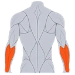

Double Kettlebell Overhead Carry
A loaded walk with a kettlebell locked out above each shoulder — the hardest of the carries to keep still, combining the offset mass of the bells with double the overhead load.
Shoulders · Kettlebell · Advanced

Muscles worked by the Double Kettlebell Overhead Carry
Primary
Secondary

Forearm ExtensorsWrist Extensor MusclesAlso called: front deltoid, anterior delt, front delt, anterior deltoid, side deltoid, lateral delt.
Equipment
Also called: kb, cast iron kettlebell, competition kettlebell, girya.
How to do the Double Kettlebell Overhead Carry
- Clean two kettlebells to the rack, then press or push press both to lockout overhead.
- Straighten both elbows and settle each bell behind and above its wrist, with your wrists straight.
- Pull your ribs down and brace hard before the first step; with both bells overhead there is nothing to counterbalance with.
- Walk forward with short, controlled strides, keeping both bells stacked over your shoulders.
- Keep looking straight ahead and breathe steadily through the carry.
- Cover the desired distance, then lower both bells to the rack and down under control.
Form tips
- Earn this one. Be comfortable with the single-bell overhead carry on both sides before loading two.
- Only do it where you can safely drop both bells, and know which way you will step if you have to.
- Distance should be short and posture perfect. The moment your back arches or a wrist folds, the set is finished.
At a glance
| Body part | Shoulders |
|---|---|
| Category | Strength |
| Force type | Static |
| Mechanic | Compound |
| Difficulty | Advanced |
| Equipment | Kettlebell |
| Goals | Strength, Endurance |
| Tags | Shoulder focus, Shoulder stability, Core, Full body |
| MET | 5.5 (metabolic equivalent, for calorie estimates) |
| Unilateral | No |
| Bodyweight | No |
| Dataset id | double-kettlebell-overhead-carry |
Double Kettlebell Overhead Carry in German & Spanish
| German | Doppel-Kettlebell-Überkopftragen |
|---|---|
| Spanish | Paseo con Dos Kettlebells sobre la Cabeza |
Descriptions, instructions and tips ship in all three languages in the JSON.
Related exercises
Exercise data (JSON)
The record below is exactly what exercises.json ships for this exercise — names, descriptions, instructions and tips in English, German and Spanish.
{
"id": "double-kettlebell-overhead-carry",
"name_en": "Double Kettlebell Overhead Carry",
"name_de": "Doppel-Kettlebell-Überkopftragen",
"name_es": "Paseo con Dos Kettlebells sobre la Cabeza",
"description_en": "A loaded walk with a kettlebell locked out above each shoulder — the hardest of the carries to keep still, combining the offset mass of the bells with double the overhead load.",
"description_de": "Ein Tragegang mit je einer Kettlebell über jeder Schulter — von allen Tragevarianten die am schwersten ruhig zu haltende, weil sich die versetzte Masse der Kugeln mit der doppelten Überkopflast verbindet.",
"description_es": "Un paseo cargado con una kettlebell bloqueada sobre cada hombro — el más difícil de sostener quieto de todos los paseos, ya que combina la masa descentrada de las bolas con el doble de carga por encima de la cabeza.",
"category": "strength",
"force_type": "static",
"mechanic": "compound",
"difficulty": "advanced",
"equipment": "kettlebell",
"body_part": "shoulders",
"primary_muscles": [
"anterior_deltoid",
"lateral_deltoid"
],
"secondary_muscles": [
"erector_spinae",
"forearm_extensors",
"serratus_anterior",
"transverse_abdominis",
"trapezius",
"triceps_brachii"
],
"goals": [
"strength",
"endurance"
],
"tags": [
"shoulder_focus",
"shoulder_stability",
"core",
"full_body"
],
"is_unilateral": false,
"is_bodyweight": false,
"instructions_en": [
"Clean two kettlebells to the rack, then press or push press both to lockout overhead.",
"Straighten both elbows and settle each bell behind and above its wrist, with your wrists straight.",
"Pull your ribs down and brace hard before the first step; with both bells overhead there is nothing to counterbalance with.",
"Walk forward with short, controlled strides, keeping both bells stacked over your shoulders.",
"Keep looking straight ahead and breathe steadily through the carry.",
"Cover the desired distance, then lower both bells to the rack and down under control."
],
"instructions_de": [
"Bring zwei Kettlebells in die Rack-Position und drück oder stoß beide über Kopf in die Streckung.",
"Streck beide Ellenbogen und leg jede Kugel hinter und über ihr Handgelenk, die Handgelenke bleiben gerade.",
"Zieh die Rippen nach unten und spann fest an, bevor du losgehst — mit beiden Kugeln oben gibt es nichts zum Gegensteuern.",
"Geh mit kurzen, kontrollierten Schritten vorwärts und halt beide Kugeln über den Schultern gestapelt.",
"Schau geradeaus und atme über die ganze Strecke ruhig weiter.",
"Leg die gewünschte Distanz zurück, setz dann beide Kugeln über die Rack-Position kontrolliert ab."
],
"instructions_es": [
"Lleva dos kettlebells al rack y luego pásalas a bloqueo por encima de la cabeza con press o push press.",
"Estira ambos codos y asienta cada bola por detrás y por encima de su muñeca, con las muñecas rectas.",
"Lleva las costillas abajo y aprieta fuerte antes del primer paso; con las dos bolas arriba no queda nada con lo que contrapesar.",
"Camina hacia delante con zancadas cortas y controladas, manteniendo ambas bolas alineadas sobre los hombros.",
"Sigue mirando al frente y respira de forma constante durante todo el paseo.",
"Cubre la distancia deseada y baja después ambas bolas al rack y al suelo de forma controlada."
],
"tips_en": [
"Earn this one. Be comfortable with the single-bell overhead carry on both sides before loading two.",
"Only do it where you can safely drop both bells, and know which way you will step if you have to.",
"Distance should be short and posture perfect. The moment your back arches or a wrist folds, the set is finished."
],
"tips_de": [
"Verdien dir diese Variante. Beherrsche das einarmige Überkopftragen auf beiden Seiten sicher, bevor du zwei Kugeln nimmst.",
"Mach sie nur dort, wo du beide Kugeln gefahrlos fallen lassen kannst — und wisse vorher, wohin du dann trittst.",
"Die Distanz bleibt kurz und die Haltung perfekt. Sobald der Rücken ins Hohlkreuz geht oder ein Handgelenk einknickt, ist der Satz vorbei."
],
"tips_es": [
"Gánate este ejercicio. Domina el paseo con una sola kettlebell por ambos lados antes de cargar dos.",
"Hazlo solo donde puedas soltar ambas bolas con seguridad, y ten claro hacia dónde te apartarás si hace falta.",
"La distancia debe ser corta y la postura perfecta. En cuanto la espalda se arquee o se doble una muñeca, la serie ha terminado."
],
"met": 5.5,
"images": {
"flat": {
"main": "images/flat/double-kettlebell-overhead-carry-main.webp"
}
}
}Fetch just this exercise
const { exercises } = await fetch(
"https://exercise-dataset.com/exercises.json"
).then(r => r.json());
const ex = exercises.find(e => e.id === "double-kettlebell-overhead-carry");Free for personal and commercial in-app use with attribution (“Exercise data by RepDB”) — see the license and ready-made attribution snippets. Redistributing the data as a dataset or API is not permitted.